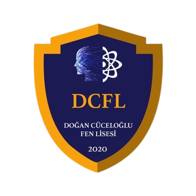
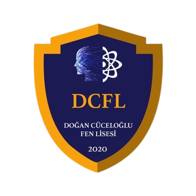
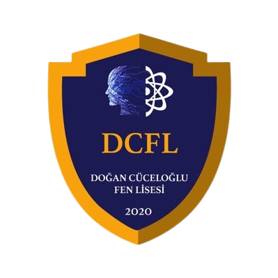
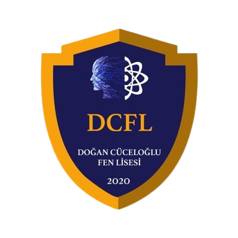

1987 yılında İstanbul’da doğdu. İlk, orta ve lise eğitimini İstanbul’da tamamladı. Profesyonel olarak Taekwondo branşıyla ilgilendi. Milli Sporcu unvanını elde ederek ülkemizi ulusal ve uluslararası yarışmalarda temsil etti. Dünya Kupası 1. Dünya Şampiyonası´nda 3.´lük ve birçok ulusal ve uluslararası yarışmada şampiyonluk ve dereceler elde etti.
2010 yılında Marmara Üniversitesi Spor Bilimleri Fakültesi Beden Eğitimi ve Spor Öğretmenliği Bölümü´nden mezun oldu. 2012 yılında öğretmen olarak atandı. Çapa Anadolu Öğretmen Lisesi ve İstanbul Erkek Lisesinde Beden Eğitimi ve Spor Öğretmeni olarak görev yaptı. 2015 yılında Çapa Fen Lisesine okul müdür yardımcısı olarak atandı. 2015-2020 yılları arasında Çapa Fen Lisesinde öğrenci işlerinden ve pansiyondan sorumlu müdür yardımcısı olarak görev yaptı. Eğitim Yönetimi ve Planlaması Tezli Yüksek Lisans öğrencisi olup 2. lisans eğitimine İstanbul Üniversitesi Siyaset Bilimi ve Kamu Yönetimi Bölümü´nde devam etmektedir.
22.12.2020 tarihinde Doğan Cüceloğlu Fen Lisesinde Okul Müdürü olarak göreve başlayan Samet KUKAL evli ve iki çocuk babasıdır.
Bu websitesindeki tüm haklar/kodlar Efeisky'ye aittir.